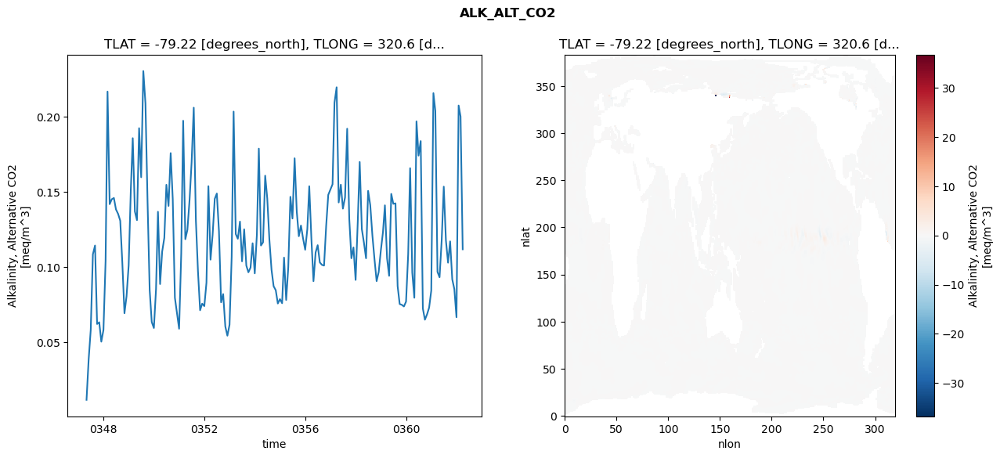
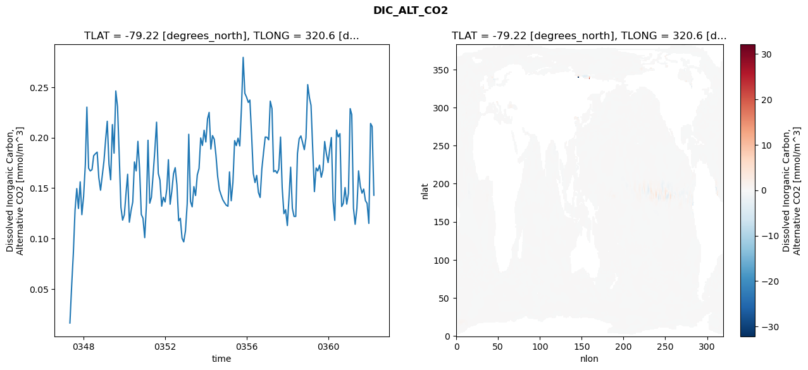
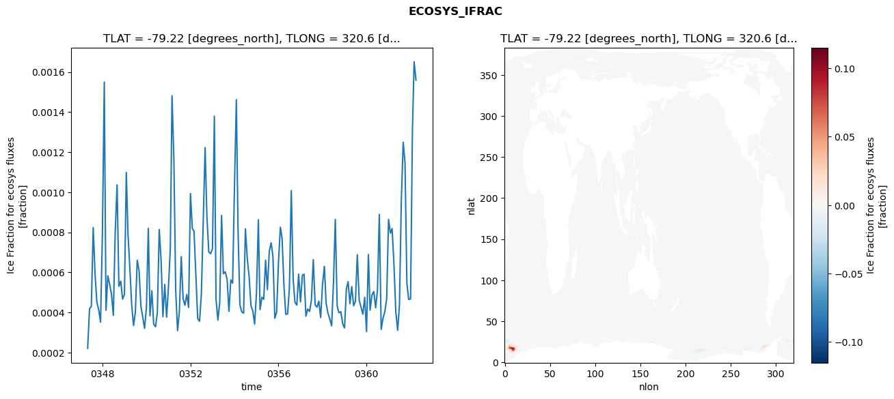
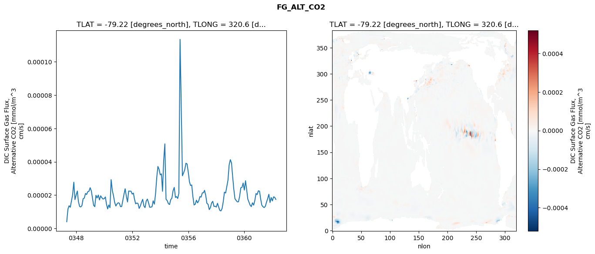

glb-dor_North_Atlantic_basin_036_1999-04-01_00145#
Simulation details#
Case: smyle.cdr-atlas-v0.glb-dor_North_Atlantic_basin_036_1999-04-01_00145.001
Basin: North_Atlantic_basin
Polygon: 36.0
Start date: 1999-04
Show code cell source Hide code cell source
import xarray as xr
import matplotlib.pyplot as plt
Show code cell source Hide code cell source
zarr_store = "/path/to/zarr/store"
# Parameters
zarr_store = "/global/cfs/projectdirs/m4746/Projects/Ocean-CDR-Atlas-v0/data/validation/smyle.cdr-atlas-v0.glb-dor_North_Atlantic_basin_036_1999-04-01_00145.001.validation.zarr"
Show code cell source Hide code cell source
%%time
ds_o = xr.open_zarr(zarr_store).compute()
ds_o
CPU times: user 610 ms, sys: 406 ms, total: 1.02 s
Wall time: 1.23 s
<xarray.Dataset> Size: 2MB
Dimensions: (nlat: 384, nlon: 320, time: 180)
Coordinates:
TLAT float64 8B -79.22
TLONG float64 8B 320.6
ULAT float64 8B -78.95
ULONG float64 8B 321.1
* time (time) object 1kB 0347-05-01 00:00:00 ... 0362-04-01 0...
z_t float32 4B 500.0
Dimensions without coordinates: nlat, nlon
Data variables:
ALK_ALT_CO2_diff (nlat, nlon) float32 492kB nan nan nan ... nan nan nan
ALK_ALT_CO2_rmse (time) float64 1kB 0.01168 0.03873 ... 0.2002 0.1119
DIC_ALT_CO2_diff (nlat, nlon) float32 492kB nan nan nan ... nan nan nan
DIC_ALT_CO2_rmse (time) float64 1kB 0.01615 0.05283 ... 0.211 0.1428
ECOSYS_IFRAC_diff (nlat, nlon) float32 492kB nan nan nan ... nan nan nan
ECOSYS_IFRAC_rmse (time) float64 1kB 0.0002215 0.0004186 ... 0.001559
FG_ALT_CO2_diff (nlat, nlon) float32 492kB nan nan nan ... nan nan nan
FG_ALT_CO2_rmse (time) float64 1kB 4.036e-06 1.162e-05 ... 1.745e-05xarray.Dataset
- nlat: 384
- nlon: 320
- time: 180
- TLAT()float64-79.22
- long_name :
- array of t-grid latitudes
- units :
- degrees_north
array(-79.22052261)
- TLONG()float64320.6
- long_name :
- array of t-grid longitudes
- units :
- degrees_east
array(320.56250892)
- ULAT()float64-78.95
- long_name :
- array of u-grid latitudes
- units :
- degrees_north
array(-78.95289509)
- ULONG()float64321.1
- long_name :
- array of u-grid longitudes
- units :
- degrees_east
array(321.12500894)
- time(time)object0347-05-01 00:00:00 ... 0362-04-...
- bounds :
- time_bound
- long_name :
- time
array([cftime.DatetimeNoLeap(347, 5, 1, 0, 0, 0, 0, has_year_zero=True), cftime.DatetimeNoLeap(347, 6, 1, 0, 0, 0, 0, has_year_zero=True), cftime.DatetimeNoLeap(347, 7, 1, 0, 0, 0, 0, has_year_zero=True), cftime.DatetimeNoLeap(347, 8, 1, 0, 0, 0, 0, has_year_zero=True), cftime.DatetimeNoLeap(347, 9, 1, 0, 0, 0, 0, has_year_zero=True), cftime.DatetimeNoLeap(347, 10, 1, 0, 0, 0, 0, has_year_zero=True), cftime.DatetimeNoLeap(347, 11, 1, 0, 0, 0, 0, has_year_zero=True), cftime.DatetimeNoLeap(347, 12, 1, 0, 0, 0, 0, has_year_zero=True), cftime.DatetimeNoLeap(348, 1, 1, 0, 0, 0, 0, has_year_zero=True), cftime.DatetimeNoLeap(348, 2, 1, 0, 0, 0, 0, has_year_zero=True), cftime.DatetimeNoLeap(348, 3, 1, 0, 0, 0, 0, has_year_zero=True), cftime.DatetimeNoLeap(348, 4, 1, 0, 0, 0, 0, has_year_zero=True), cftime.DatetimeNoLeap(348, 5, 1, 0, 0, 0, 0, has_year_zero=True), cftime.DatetimeNoLeap(348, 6, 1, 0, 0, 0, 0, has_year_zero=True), cftime.DatetimeNoLeap(348, 7, 1, 0, 0, 0, 0, has_year_zero=True), cftime.DatetimeNoLeap(348, 8, 1, 0, 0, 0, 0, has_year_zero=True), cftime.DatetimeNoLeap(348, 9, 1, 0, 0, 0, 0, has_year_zero=True), cftime.DatetimeNoLeap(348, 10, 1, 0, 0, 0, 0, has_year_zero=True), cftime.DatetimeNoLeap(348, 11, 1, 0, 0, 0, 0, has_year_zero=True), cftime.DatetimeNoLeap(348, 12, 1, 0, 0, 0, 0, has_year_zero=True), cftime.DatetimeNoLeap(349, 1, 1, 0, 0, 0, 0, has_year_zero=True), cftime.DatetimeNoLeap(349, 2, 1, 0, 0, 0, 0, has_year_zero=True), cftime.DatetimeNoLeap(349, 3, 1, 0, 0, 0, 0, has_year_zero=True), cftime.DatetimeNoLeap(349, 4, 1, 0, 0, 0, 0, has_year_zero=True), cftime.DatetimeNoLeap(349, 5, 1, 0, 0, 0, 0, has_year_zero=True), cftime.DatetimeNoLeap(349, 6, 1, 0, 0, 0, 0, has_year_zero=True), cftime.DatetimeNoLeap(349, 7, 1, 0, 0, 0, 0, has_year_zero=True), cftime.DatetimeNoLeap(349, 8, 1, 0, 0, 0, 0, has_year_zero=True), cftime.DatetimeNoLeap(349, 9, 1, 0, 0, 0, 0, has_year_zero=True), cftime.DatetimeNoLeap(349, 10, 1, 0, 0, 0, 0, has_year_zero=True), cftime.DatetimeNoLeap(349, 11, 1, 0, 0, 0, 0, has_year_zero=True), cftime.DatetimeNoLeap(349, 12, 1, 0, 0, 0, 0, has_year_zero=True), cftime.DatetimeNoLeap(350, 1, 1, 0, 0, 0, 0, has_year_zero=True), cftime.DatetimeNoLeap(350, 2, 1, 0, 0, 0, 0, has_year_zero=True), cftime.DatetimeNoLeap(350, 3, 1, 0, 0, 0, 0, has_year_zero=True), cftime.DatetimeNoLeap(350, 4, 1, 0, 0, 0, 0, has_year_zero=True), cftime.DatetimeNoLeap(350, 5, 1, 0, 0, 0, 0, has_year_zero=True), cftime.DatetimeNoLeap(350, 6, 1, 0, 0, 0, 0, has_year_zero=True), cftime.DatetimeNoLeap(350, 7, 1, 0, 0, 0, 0, has_year_zero=True), cftime.DatetimeNoLeap(350, 8, 1, 0, 0, 0, 0, has_year_zero=True), cftime.DatetimeNoLeap(350, 9, 1, 0, 0, 0, 0, has_year_zero=True), cftime.DatetimeNoLeap(350, 10, 1, 0, 0, 0, 0, has_year_zero=True), cftime.DatetimeNoLeap(350, 11, 1, 0, 0, 0, 0, has_year_zero=True), cftime.DatetimeNoLeap(350, 12, 1, 0, 0, 0, 0, has_year_zero=True), cftime.DatetimeNoLeap(351, 1, 1, 0, 0, 0, 0, has_year_zero=True), cftime.DatetimeNoLeap(351, 2, 1, 0, 0, 0, 0, has_year_zero=True), cftime.DatetimeNoLeap(351, 3, 1, 0, 0, 0, 0, has_year_zero=True), cftime.DatetimeNoLeap(351, 4, 1, 0, 0, 0, 0, has_year_zero=True), cftime.DatetimeNoLeap(351, 5, 1, 0, 0, 0, 0, has_year_zero=True), cftime.DatetimeNoLeap(351, 6, 1, 0, 0, 0, 0, has_year_zero=True), cftime.DatetimeNoLeap(351, 7, 1, 0, 0, 0, 0, has_year_zero=True), cftime.DatetimeNoLeap(351, 8, 1, 0, 0, 0, 0, has_year_zero=True), cftime.DatetimeNoLeap(351, 9, 1, 0, 0, 0, 0, has_year_zero=True), cftime.DatetimeNoLeap(351, 10, 1, 0, 0, 0, 0, has_year_zero=True), cftime.DatetimeNoLeap(351, 11, 1, 0, 0, 0, 0, has_year_zero=True), cftime.DatetimeNoLeap(351, 12, 1, 0, 0, 0, 0, has_year_zero=True), cftime.DatetimeNoLeap(352, 1, 1, 0, 0, 0, 0, has_year_zero=True), cftime.DatetimeNoLeap(352, 2, 1, 0, 0, 0, 0, has_year_zero=True), cftime.DatetimeNoLeap(352, 3, 1, 0, 0, 0, 0, has_year_zero=True), cftime.DatetimeNoLeap(352, 4, 1, 0, 0, 0, 0, has_year_zero=True), cftime.DatetimeNoLeap(352, 5, 1, 0, 0, 0, 0, has_year_zero=True), cftime.DatetimeNoLeap(352, 6, 1, 0, 0, 0, 0, has_year_zero=True), cftime.DatetimeNoLeap(352, 7, 1, 0, 0, 0, 0, has_year_zero=True), cftime.DatetimeNoLeap(352, 8, 1, 0, 0, 0, 0, has_year_zero=True), cftime.DatetimeNoLeap(352, 9, 1, 0, 0, 0, 0, has_year_zero=True), cftime.DatetimeNoLeap(352, 10, 1, 0, 0, 0, 0, has_year_zero=True), cftime.DatetimeNoLeap(352, 11, 1, 0, 0, 0, 0, has_year_zero=True), cftime.DatetimeNoLeap(352, 12, 1, 0, 0, 0, 0, has_year_zero=True), cftime.DatetimeNoLeap(353, 1, 1, 0, 0, 0, 0, has_year_zero=True), cftime.DatetimeNoLeap(353, 2, 1, 0, 0, 0, 0, has_year_zero=True), cftime.DatetimeNoLeap(353, 3, 1, 0, 0, 0, 0, has_year_zero=True), cftime.DatetimeNoLeap(353, 4, 1, 0, 0, 0, 0, has_year_zero=True), cftime.DatetimeNoLeap(353, 5, 1, 0, 0, 0, 0, has_year_zero=True), cftime.DatetimeNoLeap(353, 6, 1, 0, 0, 0, 0, has_year_zero=True), cftime.DatetimeNoLeap(353, 7, 1, 0, 0, 0, 0, has_year_zero=True), cftime.DatetimeNoLeap(353, 8, 1, 0, 0, 0, 0, has_year_zero=True), cftime.DatetimeNoLeap(353, 9, 1, 0, 0, 0, 0, has_year_zero=True), cftime.DatetimeNoLeap(353, 10, 1, 0, 0, 0, 0, has_year_zero=True), cftime.DatetimeNoLeap(353, 11, 1, 0, 0, 0, 0, has_year_zero=True), cftime.DatetimeNoLeap(353, 12, 1, 0, 0, 0, 0, has_year_zero=True), cftime.DatetimeNoLeap(354, 1, 1, 0, 0, 0, 0, has_year_zero=True), cftime.DatetimeNoLeap(354, 2, 1, 0, 0, 0, 0, has_year_zero=True), cftime.DatetimeNoLeap(354, 3, 1, 0, 0, 0, 0, has_year_zero=True), cftime.DatetimeNoLeap(354, 4, 1, 0, 0, 0, 0, has_year_zero=True), cftime.DatetimeNoLeap(354, 5, 1, 0, 0, 0, 0, has_year_zero=True), cftime.DatetimeNoLeap(354, 6, 1, 0, 0, 0, 0, has_year_zero=True), cftime.DatetimeNoLeap(354, 7, 1, 0, 0, 0, 0, has_year_zero=True), cftime.DatetimeNoLeap(354, 8, 1, 0, 0, 0, 0, has_year_zero=True), cftime.DatetimeNoLeap(354, 9, 1, 0, 0, 0, 0, has_year_zero=True), cftime.DatetimeNoLeap(354, 10, 1, 0, 0, 0, 0, has_year_zero=True), cftime.DatetimeNoLeap(354, 11, 1, 0, 0, 0, 0, has_year_zero=True), cftime.DatetimeNoLeap(354, 12, 1, 0, 0, 0, 0, has_year_zero=True), cftime.DatetimeNoLeap(355, 1, 1, 0, 0, 0, 0, has_year_zero=True), cftime.DatetimeNoLeap(355, 2, 1, 0, 0, 0, 0, has_year_zero=True), cftime.DatetimeNoLeap(355, 3, 1, 0, 0, 0, 0, has_year_zero=True), cftime.DatetimeNoLeap(355, 4, 1, 0, 0, 0, 0, has_year_zero=True), cftime.DatetimeNoLeap(355, 5, 1, 0, 0, 0, 0, has_year_zero=True), cftime.DatetimeNoLeap(355, 6, 1, 0, 0, 0, 0, has_year_zero=True), cftime.DatetimeNoLeap(355, 7, 1, 0, 0, 0, 0, has_year_zero=True), cftime.DatetimeNoLeap(355, 8, 1, 0, 0, 0, 0, has_year_zero=True), cftime.DatetimeNoLeap(355, 9, 1, 0, 0, 0, 0, has_year_zero=True), cftime.DatetimeNoLeap(355, 10, 1, 0, 0, 0, 0, has_year_zero=True), cftime.DatetimeNoLeap(355, 11, 1, 0, 0, 0, 0, has_year_zero=True), cftime.DatetimeNoLeap(355, 12, 1, 0, 0, 0, 0, has_year_zero=True), cftime.DatetimeNoLeap(356, 1, 1, 0, 0, 0, 0, has_year_zero=True), cftime.DatetimeNoLeap(356, 2, 1, 0, 0, 0, 0, has_year_zero=True), cftime.DatetimeNoLeap(356, 3, 1, 0, 0, 0, 0, has_year_zero=True), cftime.DatetimeNoLeap(356, 4, 1, 0, 0, 0, 0, has_year_zero=True), cftime.DatetimeNoLeap(356, 5, 1, 0, 0, 0, 0, has_year_zero=True), cftime.DatetimeNoLeap(356, 6, 1, 0, 0, 0, 0, has_year_zero=True), cftime.DatetimeNoLeap(356, 7, 1, 0, 0, 0, 0, has_year_zero=True), cftime.DatetimeNoLeap(356, 8, 1, 0, 0, 0, 0, has_year_zero=True), cftime.DatetimeNoLeap(356, 9, 1, 0, 0, 0, 0, has_year_zero=True), cftime.DatetimeNoLeap(356, 10, 1, 0, 0, 0, 0, has_year_zero=True), cftime.DatetimeNoLeap(356, 11, 1, 0, 0, 0, 0, has_year_zero=True), cftime.DatetimeNoLeap(356, 12, 1, 0, 0, 0, 0, has_year_zero=True), cftime.DatetimeNoLeap(357, 1, 1, 0, 0, 0, 0, has_year_zero=True), cftime.DatetimeNoLeap(357, 2, 1, 0, 0, 0, 0, has_year_zero=True), cftime.DatetimeNoLeap(357, 3, 1, 0, 0, 0, 0, has_year_zero=True), cftime.DatetimeNoLeap(357, 4, 1, 0, 0, 0, 0, has_year_zero=True), cftime.DatetimeNoLeap(357, 5, 1, 0, 0, 0, 0, has_year_zero=True), cftime.DatetimeNoLeap(357, 6, 1, 0, 0, 0, 0, has_year_zero=True), cftime.DatetimeNoLeap(357, 7, 1, 0, 0, 0, 0, has_year_zero=True), cftime.DatetimeNoLeap(357, 8, 1, 0, 0, 0, 0, has_year_zero=True), cftime.DatetimeNoLeap(357, 9, 1, 0, 0, 0, 0, has_year_zero=True), cftime.DatetimeNoLeap(357, 10, 1, 0, 0, 0, 0, has_year_zero=True), cftime.DatetimeNoLeap(357, 11, 1, 0, 0, 0, 0, has_year_zero=True), cftime.DatetimeNoLeap(357, 12, 1, 0, 0, 0, 0, has_year_zero=True), cftime.DatetimeNoLeap(358, 1, 1, 0, 0, 0, 0, has_year_zero=True), cftime.DatetimeNoLeap(358, 2, 1, 0, 0, 0, 0, has_year_zero=True), cftime.DatetimeNoLeap(358, 3, 1, 0, 0, 0, 0, has_year_zero=True), cftime.DatetimeNoLeap(358, 4, 1, 0, 0, 0, 0, has_year_zero=True), cftime.DatetimeNoLeap(358, 5, 1, 0, 0, 0, 0, has_year_zero=True), cftime.DatetimeNoLeap(358, 6, 1, 0, 0, 0, 0, has_year_zero=True), cftime.DatetimeNoLeap(358, 7, 1, 0, 0, 0, 0, has_year_zero=True), cftime.DatetimeNoLeap(358, 8, 1, 0, 0, 0, 0, has_year_zero=True), cftime.DatetimeNoLeap(358, 9, 1, 0, 0, 0, 0, has_year_zero=True), cftime.DatetimeNoLeap(358, 10, 1, 0, 0, 0, 0, has_year_zero=True), cftime.DatetimeNoLeap(358, 11, 1, 0, 0, 0, 0, has_year_zero=True), cftime.DatetimeNoLeap(358, 12, 1, 0, 0, 0, 0, has_year_zero=True), cftime.DatetimeNoLeap(359, 1, 1, 0, 0, 0, 0, has_year_zero=True), cftime.DatetimeNoLeap(359, 2, 1, 0, 0, 0, 0, has_year_zero=True), cftime.DatetimeNoLeap(359, 3, 1, 0, 0, 0, 0, has_year_zero=True), cftime.DatetimeNoLeap(359, 4, 1, 0, 0, 0, 0, has_year_zero=True), cftime.DatetimeNoLeap(359, 5, 1, 0, 0, 0, 0, has_year_zero=True), cftime.DatetimeNoLeap(359, 6, 1, 0, 0, 0, 0, has_year_zero=True), cftime.DatetimeNoLeap(359, 7, 1, 0, 0, 0, 0, has_year_zero=True), cftime.DatetimeNoLeap(359, 8, 1, 0, 0, 0, 0, has_year_zero=True), cftime.DatetimeNoLeap(359, 9, 1, 0, 0, 0, 0, has_year_zero=True), cftime.DatetimeNoLeap(359, 10, 1, 0, 0, 0, 0, has_year_zero=True), cftime.DatetimeNoLeap(359, 11, 1, 0, 0, 0, 0, has_year_zero=True), cftime.DatetimeNoLeap(359, 12, 1, 0, 0, 0, 0, has_year_zero=True), cftime.DatetimeNoLeap(360, 1, 1, 0, 0, 0, 0, has_year_zero=True), cftime.DatetimeNoLeap(360, 2, 1, 0, 0, 0, 0, has_year_zero=True), cftime.DatetimeNoLeap(360, 3, 1, 0, 0, 0, 0, has_year_zero=True), cftime.DatetimeNoLeap(360, 4, 1, 0, 0, 0, 0, has_year_zero=True), cftime.DatetimeNoLeap(360, 5, 1, 0, 0, 0, 0, has_year_zero=True), cftime.DatetimeNoLeap(360, 6, 1, 0, 0, 0, 0, has_year_zero=True), cftime.DatetimeNoLeap(360, 7, 1, 0, 0, 0, 0, has_year_zero=True), cftime.DatetimeNoLeap(360, 8, 1, 0, 0, 0, 0, has_year_zero=True), cftime.DatetimeNoLeap(360, 9, 1, 0, 0, 0, 0, has_year_zero=True), cftime.DatetimeNoLeap(360, 10, 1, 0, 0, 0, 0, has_year_zero=True), cftime.DatetimeNoLeap(360, 11, 1, 0, 0, 0, 0, has_year_zero=True), cftime.DatetimeNoLeap(360, 12, 1, 0, 0, 0, 0, has_year_zero=True), cftime.DatetimeNoLeap(361, 1, 1, 0, 0, 0, 0, has_year_zero=True), cftime.DatetimeNoLeap(361, 2, 1, 0, 0, 0, 0, has_year_zero=True), cftime.DatetimeNoLeap(361, 3, 1, 0, 0, 0, 0, has_year_zero=True), cftime.DatetimeNoLeap(361, 4, 1, 0, 0, 0, 0, has_year_zero=True), cftime.DatetimeNoLeap(361, 5, 1, 0, 0, 0, 0, has_year_zero=True), cftime.DatetimeNoLeap(361, 6, 1, 0, 0, 0, 0, has_year_zero=True), cftime.DatetimeNoLeap(361, 7, 1, 0, 0, 0, 0, has_year_zero=True), cftime.DatetimeNoLeap(361, 8, 1, 0, 0, 0, 0, has_year_zero=True), cftime.DatetimeNoLeap(361, 9, 1, 0, 0, 0, 0, has_year_zero=True), cftime.DatetimeNoLeap(361, 10, 1, 0, 0, 0, 0, has_year_zero=True), cftime.DatetimeNoLeap(361, 11, 1, 0, 0, 0, 0, has_year_zero=True), cftime.DatetimeNoLeap(361, 12, 1, 0, 0, 0, 0, has_year_zero=True), cftime.DatetimeNoLeap(362, 1, 1, 0, 0, 0, 0, has_year_zero=True), cftime.DatetimeNoLeap(362, 2, 1, 0, 0, 0, 0, has_year_zero=True), cftime.DatetimeNoLeap(362, 3, 1, 0, 0, 0, 0, has_year_zero=True), cftime.DatetimeNoLeap(362, 4, 1, 0, 0, 0, 0, has_year_zero=True)], dtype=object) - z_t()float32500.0
- long_name :
- depth from surface to midpoint of layer
- positive :
- down
- units :
- centimeters
- valid_max :
- 537500.0
- valid_min :
- 500.0
array(500., dtype=float32)
- ALK_ALT_CO2_diff(nlat, nlon)float32nan nan nan nan ... nan nan nan nan
- cell_methods :
- time: mean
- grid_loc :
- 3111
- long_name :
- Alkalinity, Alternative CO2
- units :
- meq/m^3
array([[ nan, nan, nan, ..., nan, nan, nan], [ nan, nan, nan, ..., nan, nan, nan], [0.04174805, 0.04589844, 0.05541992, ..., nan, nan, nan], ..., [ nan, nan, nan, ..., nan, nan, nan], [ nan, nan, nan, ..., nan, nan, nan], [ nan, nan, nan, ..., nan, nan, nan]], dtype=float32) - ALK_ALT_CO2_rmse(time)float640.01168 0.03873 ... 0.2002 0.1119
- cell_methods :
- time: mean
- grid_loc :
- 3111
- long_name :
- Alkalinity, Alternative CO2
- units :
- meq/m^3
array([0.01168147, 0.03872836, 0.05828724, 0.10857052, 0.11437008, 0.06216488, 0.06330378, 0.05040879, 0.05816541, 0.10424496, 0.21681526, 0.1418788 , 0.14515199, 0.1459964 , 0.13842586, 0.13542793, 0.13086783, 0.10305714, 0.06928986, 0.08051375, 0.1011445 , 0.15138685, 0.18581536, 0.13702407, 0.13126615, 0.1924538 , 0.15980443, 0.23048026, 0.20892993, 0.14413844, 0.08474075, 0.06344939, 0.05948255, 0.08530479, 0.13683906, 0.08871805, 0.11037112, 0.11945584, 0.15478843, 0.14070088, 0.17587373, 0.14533135, 0.07960936, 0.06929678, 0.0590028 , 0.10922148, 0.19740942, 0.11857866, 0.12475264, 0.14442153, 0.16967898, 0.20610067, 0.13100684, 0.09730282, 0.07128812, 0.07569198, 0.07405374, 0.08963997, 0.15386144, 0.10498165, 0.12144081, 0.14541246, 0.14898621, 0.12388814, 0.07659376, 0.0820535 , 0.06046663, 0.05436428, 0.06166313, 0.10675674, 0.20349705, 0.1220334 , 0.1188624 , 0.13030253, 0.10383472, 0.12517085, 0.1010344 , 0.0965505 , 0.09968881, 0.11588348, 0.09583591, 0.12185885, 0.17886738, 0.11438228, 0.11653144, 0.16085105, 0.14578788, 0.11811057, 0.09817271, 0.08730246, 0.08463273, 0.0757978 , 0.07871343, 0.07597462, 0.10634154, 0.07812216, 0.09980751, 0.14679799, 0.13234276, 0.17242973, 0.13703599, 0.12055842, 0.12769328, 0.11915611, 0.11157532, 0.12529793, 0.15381694, 0.11875418, 0.09064565, 0.10979926, 0.11461148, 0.10313463, 0.10148372, 0.10101897, 0.12765712, 0.14809132, 0.15153137, 0.15511959, 0.20938977, 0.21967687, 0.14302691, 0.15484799, 0.13893798, 0.14636759, 0.19209948, 0.13218517, 0.10587673, 0.11311389, 0.09146872, 0.1301079 , 0.16997935, 0.12530392, 0.11635034, 0.10588243, 0.15075166, 0.14121676, 0.1210196 , 0.1053829 , 0.09068463, 0.09675559, 0.11101882, 0.12334582, 0.1411248 , 0.10588453, 0.09419775, 0.14873051, 0.14211826, 0.14245335, 0.08731937, 0.07541282, 0.07489641, 0.07381594, 0.07703971, 0.1087777 , 0.16582986, 0.09632615, 0.07960432, 0.19699602, 0.17420854, 0.1838858 , 0.07251678, 0.06501855, 0.06857048, 0.07305802, 0.08437959, 0.21576693, 0.20386773, 0.09681545, 0.0932475 , 0.11800974, 0.15354893, 0.11778143, 0.10295405, 0.11713101, 0.09184297, 0.08542004, 0.06664794, 0.20755124, 0.20018859, 0.11185617]) - DIC_ALT_CO2_diff(nlat, nlon)float32nan nan nan nan ... nan nan nan nan
- cell_methods :
- time: mean
- grid_loc :
- 3111
- long_name :
- Dissolved Inorganic Carbon, Alternative CO2
- units :
- mmol/m^3
array([[ nan, nan, nan, ..., nan, nan, nan], [ nan, nan, nan, ..., nan, nan, nan], [0.01342773, 0.02148438, 0.04272461, ..., nan, nan, nan], ..., [ nan, nan, nan, ..., nan, nan, nan], [ nan, nan, nan, ..., nan, nan, nan], [ nan, nan, nan, ..., nan, nan, nan]], dtype=float32) - DIC_ALT_CO2_rmse(time)float640.01615 0.05283 ... 0.211 0.1428
- cell_methods :
- time: mean
- grid_loc :
- 3111
- long_name :
- Dissolved Inorganic Carbon, Alternative CO2
- units :
- mmol/m^3
array([0.01614597, 0.05283204, 0.08479108, 0.12802303, 0.14945991, 0.1297208 , 0.15615908, 0.12359865, 0.14165568, 0.17327762, 0.23020975, 0.16958731, 0.16690359, 0.16823958, 0.18208674, 0.18403745, 0.18558262, 0.160144 , 0.14784545, 0.16183975, 0.17678896, 0.19873235, 0.21618676, 0.17367389, 0.15819408, 0.21291663, 0.18458545, 0.2462033 , 0.23057392, 0.18315135, 0.13090793, 0.11817001, 0.12351452, 0.14544163, 0.16363609, 0.11615879, 0.12754422, 0.13625041, 0.17584056, 0.16694612, 0.1962867 , 0.16906339, 0.12378909, 0.12009461, 0.10078579, 0.13358367, 0.19735613, 0.13499338, 0.14085079, 0.16374378, 0.18718039, 0.21530524, 0.16456739, 0.15781855, 0.1320092 , 0.14079057, 0.13614877, 0.14926073, 0.17805476, 0.13393429, 0.14664845, 0.16421392, 0.17021109, 0.15307309, 0.11748517, 0.11997939, 0.10017558, 0.09659502, 0.10753981, 0.13427806, 0.20328141, 0.13668768, 0.1313309 , 0.15139585, 0.1426023 , 0.16305233, 0.16939671, 0.1996132 , 0.19226587, 0.20726856, 0.19564936, 0.21872805, 0.22497036, 0.18860591, 0.20197625, 0.19832752, 0.18257513, 0.16141008, 0.1483214 , 0.14312898, 0.13833435, 0.13552798, 0.13300181, 0.13192413, 0.16595562, 0.13739405, 0.15539744, 0.19700266, 0.19207239, 0.199441 , 0.19179392, 0.22953302, 0.27955264, 0.24388625, 0.24002558, 0.23486413, 0.23725964, 0.2023798 , 0.16455483, 0.15541519, 0.16253132, 0.14562697, 0.14062822, 0.1686864 , 0.18539091, 0.20058426, 0.20038815, 0.19777067, 0.23616045, 0.22873733, 0.16615855, 0.16734062, 0.16465952, 0.16880623, 0.20056665, 0.15013979, 0.12455383, 0.12846386, 0.11280534, 0.14164905, 0.17065169, 0.12988058, 0.1218306 , 0.12185809, 0.18408331, 0.19885478, 0.20167255, 0.19521319, 0.18807637, 0.19988169, 0.25254547, 0.23943666, 0.23208366, 0.1893834 , 0.14645433, 0.16996695, 0.1668707 , 0.17266843, 0.16072755, 0.16765117, 0.1961389 , 0.18414844, 0.17530158, 0.18919365, 0.20004608, 0.13677749, 0.11791748, 0.20745711, 0.20072879, 0.20389972, 0.13167961, 0.13490984, 0.15045986, 0.13403384, 0.14482307, 0.22872798, 0.22279411, 0.129995 , 0.11407741, 0.12998224, 0.1670324 , 0.15192306, 0.14492423, 0.14899289, 0.13755359, 0.1347862 , 0.11493691, 0.21402605, 0.21096559, 0.14284739]) - ECOSYS_IFRAC_diff(nlat, nlon)float32nan nan nan nan ... nan nan nan nan
- cell_methods :
- time: mean
- grid_loc :
- 2110
- long_name :
- Ice Fraction for ecosys fluxes
- units :
- fraction
array([[ nan, nan, nan, ..., nan, nan, nan], [ nan, nan, nan, ..., nan, nan, nan], [-0.00035697, -0.00118744, -0.00269949, ..., nan, nan, nan], ..., [ nan, nan, nan, ..., nan, nan, nan], [ nan, nan, nan, ..., nan, nan, nan], [ nan, nan, nan, ..., nan, nan, nan]], dtype=float32) - ECOSYS_IFRAC_rmse(time)float640.0002215 0.0004186 ... 0.001559
- cell_methods :
- time: mean
- grid_loc :
- 2110
- long_name :
- Ice Fraction for ecosys fluxes
- units :
- fraction
array([0.00022152, 0.00041858, 0.0004308 , 0.00082383, 0.00058899, 0.000452 , 0.00041241, 0.00035231, 0.00080147, 0.00154976, 0.00041136, 0.00058354, 0.00054019, 0.00048929, 0.00038628, 0.00080352, 0.00103704, 0.00053063, 0.00055661, 0.00046713, 0.00049034, 0.00109916, 0.000791 , 0.00062161, 0.00043995, 0.0003358 , 0.00040023, 0.00066102, 0.00060826, 0.00043218, 0.00037505, 0.00032123, 0.00042589, 0.00082004, 0.00038386, 0.00050879, 0.00034177, 0.00032897, 0.00040112, 0.00081453, 0.00066128, 0.0003796 , 0.00054068, 0.00037712, 0.00052758, 0.00071978, 0.0014818 , 0.00116737, 0.00050973, 0.00030979, 0.00040462, 0.00067895, 0.00047062, 0.00043634, 0.00048996, 0.00042564, 0.00099363, 0.00081913, 0.00080519, 0.0005841 , 0.00037003, 0.0003565 , 0.00049273, 0.00085541, 0.0012228 , 0.00087597, 0.00070183, 0.00069375, 0.00071876, 0.00137927, 0.00046801, 0.0003624 , 0.00045002, 0.00088426, 0.00059365, 0.00060319, 0.00056592, 0.00040599, 0.00056299, 0.00054652, 0.00103123, 0.00146136, 0.00080954, 0.0004387 , 0.0004036 , 0.00039701, 0.00081799, 0.00066974, 0.00057878, 0.00043553, 0.00040777, 0.00034269, 0.00049818, 0.00086268, 0.00041463, 0.00047646, 0.00046592, 0.00066133, 0.00051432, 0.00070535, 0.00074793, 0.00068046, 0.00037175, 0.00040209, 0.00065365, 0.00082581, 0.00077193, 0.0005371 , 0.00039184, 0.00039295, 0.00052321, 0.0010084 , 0.00056604, 0.00045136, 0.00043712, 0.00059156, 0.00045337, 0.00058678, 0.00059087, 0.00038211, 0.00041763, 0.0004059 , 0.00046302, 0.00066402, 0.00043853, 0.00042703, 0.00045711, 0.00037483, 0.0005393 , 0.0006305 , 0.00044814, 0.00039753, 0.000369 , 0.00033389, 0.0005414 , 0.00086479, 0.00043284, 0.00039889, 0.00040459, 0.00034428, 0.00032309, 0.00051888, 0.00055404, 0.00044444, 0.00052926, 0.00043395, 0.00045655, 0.00068862, 0.00046271, 0.00042801, 0.00039167, 0.00047601, 0.00030546, 0.00068962, 0.0004119 , 0.00048848, 0.00050482, 0.00042393, 0.00050923, 0.00088979, 0.00031625, 0.00037105, 0.00040557, 0.0004695 , 0.00086461, 0.00079603, 0.00081917, 0.00063923, 0.00040436, 0.00031147, 0.00043734, 0.00096023, 0.00124993, 0.00114878, 0.00054744, 0.00046543, 0.00046812, 0.00130644, 0.00165056, 0.00155929]) - FG_ALT_CO2_diff(nlat, nlon)float32nan nan nan nan ... nan nan nan nan
- cell_methods :
- time: mean
- grid_loc :
- 2110
- long_name :
- DIC Surface Gas Flux, Alternative CO2
- units :
- mmol/m^3 cm/s
array([[ nan, nan, nan, ..., nan, nan, nan], [ nan, nan, nan, ..., nan, nan, nan], [4.2497995e-06, 6.3879124e-06, 1.4219055e-05, ..., nan, nan, nan], ..., [ nan, nan, nan, ..., nan, nan, nan], [ nan, nan, nan, ..., nan, nan, nan], [ nan, nan, nan, ..., nan, nan, nan]], dtype=float32) - FG_ALT_CO2_rmse(time)float644.036e-06 1.162e-05 ... 1.745e-05
- cell_methods :
- time: mean
- grid_loc :
- 2110
- long_name :
- DIC Surface Gas Flux, Alternative CO2
- units :
- mmol/m^3 cm/s
array([4.03608636e-06, 1.16168963e-05, 1.36354331e-05, 1.27407073e-05, 1.65810350e-05, 2.01831326e-05, 2.77546662e-05, 1.73312849e-05, 2.00082812e-05, 2.24912587e-05, 1.61688659e-05, 1.32229251e-05, 1.29098438e-05, 1.37584807e-05, 1.78035893e-05, 1.82250926e-05, 2.09878017e-05, 2.03883483e-05, 2.21064244e-05, 2.23236100e-05, 2.44867786e-05, 2.24940397e-05, 1.84890791e-05, 1.39076258e-05, 1.30886608e-05, 1.98927454e-05, 1.83181104e-05, 2.00668967e-05, 1.71294074e-05, 1.95790767e-05, 1.84806040e-05, 1.76613707e-05, 1.78640798e-05, 1.89037748e-05, 1.47325469e-05, 1.17459689e-05, 1.41022273e-05, 1.24576626e-05, 2.93077786e-05, 2.27745154e-05, 1.96179650e-05, 1.56337265e-05, 1.34838139e-05, 1.47346962e-05, 1.54186755e-05, 1.51437222e-05, 1.31262162e-05, 1.31484588e-05, 1.68188813e-05, 2.05030243e-05, 2.38410495e-05, 1.93156148e-05, 1.59071281e-05, 2.24768995e-05, 2.23720802e-05, 2.23764183e-05, 2.06274379e-05, 2.12285795e-05, 1.76095032e-05, 1.48083624e-05, 1.52747295e-05, 1.49618724e-05, 1.20357107e-05, 1.35132826e-05, 1.57692677e-05, 1.74831066e-05, 1.35150221e-05, 1.25006705e-05, 1.64818947e-05, 1.76322663e-05, 1.55361754e-05, 1.27493481e-05, 1.27798535e-05, 1.30894283e-05, 1.65948751e-05, 1.45909433e-05, 2.08519385e-05, 3.02786136e-05, 3.72200752e-05, 3.55411959e-05, ... 3.33310079e-05, 3.52442281e-05, 3.91481261e-05, 3.87032576e-05, 3.37429015e-05, 2.79644586e-05, 2.57777556e-05, 2.60973287e-05, 1.91754456e-05, 1.41027638e-05, 1.45263952e-05, 1.69852763e-05, 1.53620774e-05, 1.65898025e-05, 1.91140620e-05, 1.88374538e-05, 2.13139984e-05, 2.14659170e-05, 2.28896245e-05, 1.97867921e-05, 1.50976104e-05, 1.45166238e-05, 1.13308843e-05, 1.25185300e-05, 1.53494011e-05, 1.62818577e-05, 1.32263731e-05, 1.33681283e-05, 1.28524109e-05, 1.51101200e-05, 1.30550629e-05, 1.09036918e-05, 1.05384947e-05, 1.20107088e-05, 1.61131650e-05, 2.18067636e-05, 2.12698146e-05, 2.50470567e-05, 2.90226571e-05, 3.80650743e-05, 4.12834304e-05, 3.93565842e-05, 3.15376422e-05, 2.37674897e-05, 1.79012235e-05, 1.68412717e-05, 1.59978276e-05, 1.60128987e-05, 1.93716065e-05, 2.44173804e-05, 2.46649745e-05, 2.72867539e-05, 2.30502607e-05, 2.86481490e-05, 2.36205094e-05, 1.76398531e-05, 1.58369163e-05, 1.39880241e-05, 1.31468666e-05, 1.53941346e-05, 1.40007833e-05, 1.67564556e-05, 2.09508912e-05, 2.03652137e-05, 2.26162150e-05, 2.23419636e-05, 1.78828832e-05, 1.39797861e-05, 1.30669040e-05, 1.25580706e-05, 1.32547332e-05, 1.57403533e-05, 1.79283847e-05, 2.05251522e-05, 1.55645001e-05, 1.85813994e-05, 1.65253841e-05, 1.89759565e-05, 1.87452509e-05, 1.74521576e-05])
- timePandasIndex
PandasIndex(CFTimeIndex([0347-05-01 00:00:00, 0347-06-01 00:00:00, 0347-07-01 00:00:00, 0347-08-01 00:00:00, 0347-09-01 00:00:00, 0347-10-01 00:00:00, 0347-11-01 00:00:00, 0347-12-01 00:00:00, 0348-01-01 00:00:00, 0348-02-01 00:00:00, ... 0361-07-01 00:00:00, 0361-08-01 00:00:00, 0361-09-01 00:00:00, 0361-10-01 00:00:00, 0361-11-01 00:00:00, 0361-12-01 00:00:00, 0362-01-01 00:00:00, 0362-02-01 00:00:00, 0362-03-01 00:00:00, 0362-04-01 00:00:00], dtype='object', length=180, calendar='noleap', freq='MS'))
Show code cell source Hide code cell source
variables = [v[:-5] for v in ds_o.variables if "_rmse" in v]
Show code cell source Hide code cell source
plt.rcParams.update({'figure.max_open_warning': 0})
for v in variables:
fig, axs = plt.subplots(1, 2, figsize=(15, 6))
ds_o[f"{v}_rmse"].plot(ax=axs[0])
ds_o[f"{v}_diff"].plot(ax=axs[1])
plt.suptitle(v, fontweight="bold")



